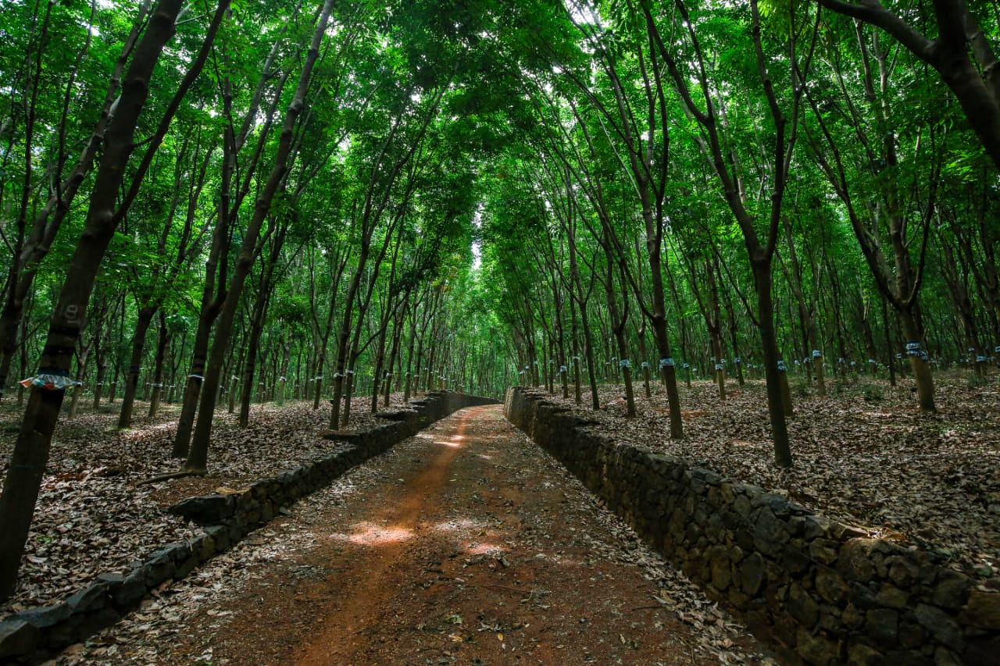

|
Vaikundam Estate is a hundred-year-old estate on the Kerala Tamil Nadu border. A rich history, which has never failed to fascinate, adds to its intrigue and beauty. These lands traditionally belong to the Maharaja of Travancore and were given as small holdings to local chieftains In the early 20th century, a few Europeans acquired the small landholdings and converted them into larger estate holdings, Sir Daniel Mackinnon Hamilton being one of the earliest. In 1924, a trio of Britishmen, Captain Thomas Patrick Madden Alexander, William Coombe, and Reginald Garnier bought the estate from Sir Daniel and were the first to introduce the idea of rubber plantations. Vaikundam Estate was one of the first estates. In 1946, Vaikundam Company Ltd took over the ownership of the estate. The estate then changed hands and names a few times and finally, in 1957, Sri Seshadrinath Sarma, bought the shares of the estate and gave it the name Vaikundam Rubber Company. It is now a third-generation family business. The Estate also hosts a bungalow, Vaikundam Legacy, built-in 1929, by the Europeans. Our grandfather made it his home and lent it its traditional Indian touch. This bungalow, a blend of British and Indian history, has been a witness to many of his dreams being fulfilled. It is from here that he took forward the Vaikundam Estate, putting his heart and soul into making it one of the most flourishing estates in Kanyakumari district. Vaikundam Legacy stands witness to his vision of being a part of the rubber cultivation movement started by the Europeans. |

|